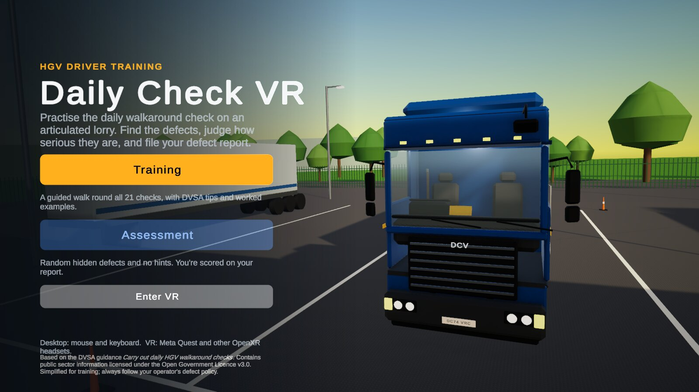
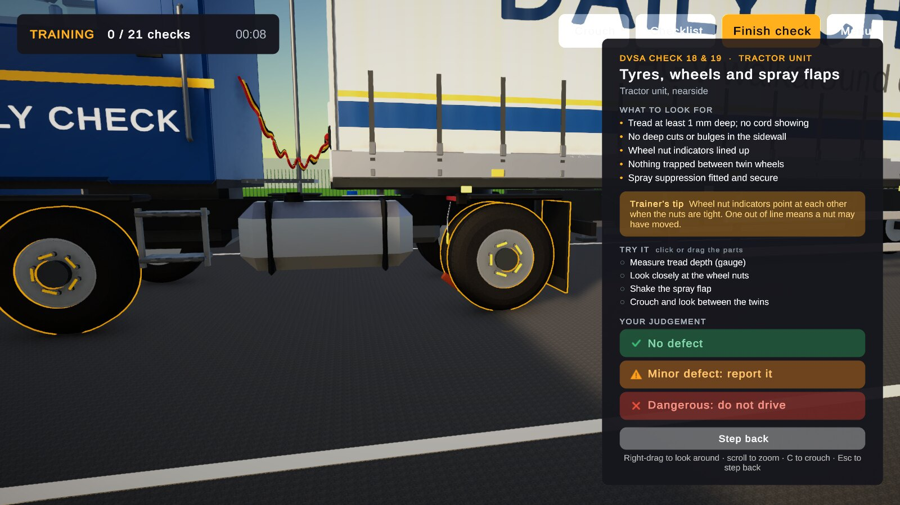
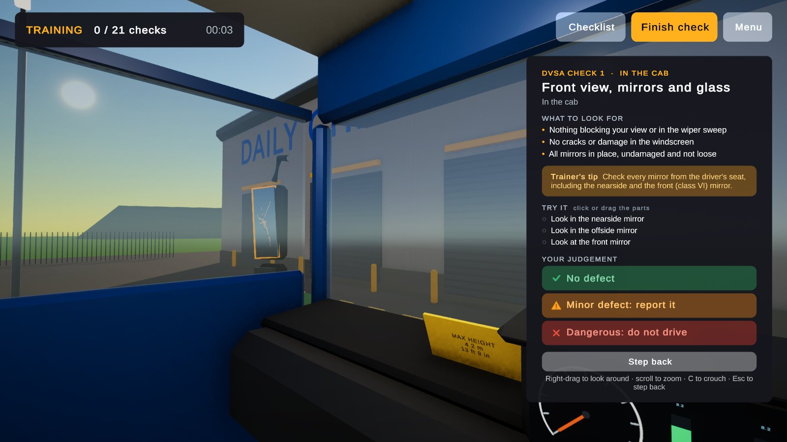
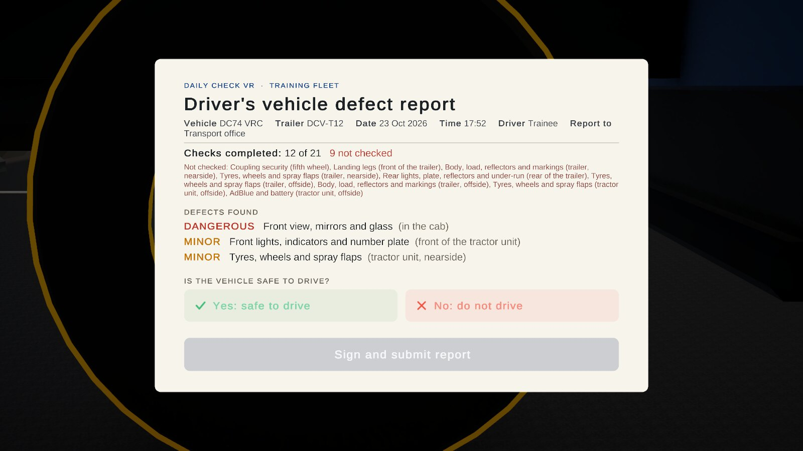
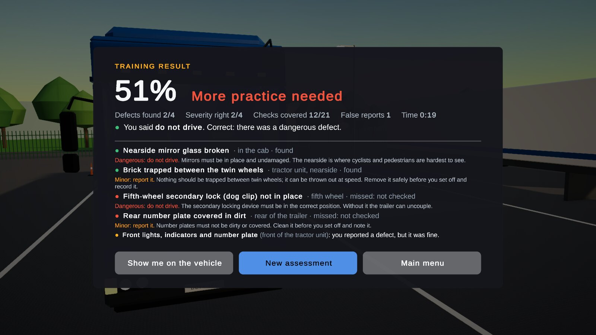
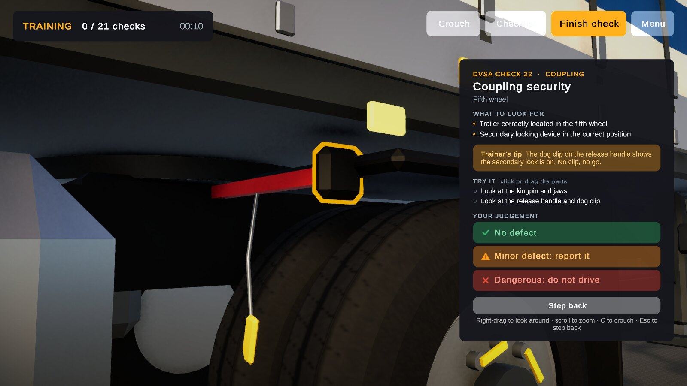

Why a walkaround trainer
Every HGV driver must check their vehicle before it goes on the road, and report any defect in writing. The DVSA guidance lists 27 things to check, from tyre tread to the fifth-wheel lock. Missing one can put an unroadworthy lorry on the road.
Practising on a real vehicle means taking it out of service, and real defects can't be planted on demand. Daily Check VR puts a lorry in a virtual yard with defects hidden on it, so drivers can practise the routine, and trainers can check they really look, as often as they like.

A walkaround in Training mode
Recorded from the real game. The driver checks the cab steps, climbs into the cab and finds a broken mirror, spots a brick trapped between the twin wheels, finds the fifth-wheel lock not in place and a dirty number plate, then files the report and decides the lorry must not be driven.
At a glance
How it plays

InspectClick a marker to look closely
The camera moves in on the part. A card lists what to look for, taken from the DVSA guidance. Look around and zoom in, then make your judgement.

Climb into the cabChecks 1 to 8
Mirrors and glass, warning lights, air pressure, the height marker and the seatbelt are checked from the driver's seat. Test the horn and run the washers.

File the reportThen get your score
Like the real defect report: vehicle, date, defects and their severity, or "nil defects". Then decide whether the lorry is safe to drive.
Two modes
- Training walks you round all 21 checks in the order drivers are taught: the cab steps, the cab, then clockwise round the vehicle. Four worked examples, two minor and two dangerous, and after each check you're told whether you were right, and why.
- Assessment plants five random defects (at least two dangerous, at least one minor) with no hints and no order. You're scored on defects found, severity, how much of the vehicle you covered, false reports, and whether you correctly decided the lorry could or couldn't be driven.
- Review shows the real defects on the vehicle afterwards, so every miss becomes a lesson.

Some of the defects
| Check | Defect | Severity |
|---|---|---|
| Tyres and wheels | Steer tyre worn below 1 mm; wheel nut indicator out of line; bulge or deep cut in a sidewall | Dangerous |
| Tyres and wheels | Brick trapped between twin wheels; spray flap missing | Minor |
| Coupling | Fifth-wheel dog clip not in place; landing legs not raised; red air line chafed and hissing | Dangerous |
| In the cab | Windscreen crack in the wiper sweep; nearside mirror broken; ABS warning on; wrong height marker; frayed seatbelt | Dangerous |
| In the cab | Screenwash empty: the wipers run dry | Minor |
| Load and body | Curtain strap undone with the curtain bulging; sideguard hanging loose | Dangerous |
| Lights and markings | Dirty rear number plate; missing side reflector; torn conspicuity tape; low AdBlue | Minor |
Severities are simplified for training. Drivers should always follow their operator's defect policy.
How it's built
Unity 6, C# and URP. The scene is empty: the yard, the lorry, the interface and the sound are all created at runtime from code. The lorry is modelled from bevelled boxes, revolved shapes (tyres, rims, tanks, gauges) and tubes (air lines, straps), with generated textures for tread, checker plate, curtains, cracks and dirt.
One codebase, three ways to play. On desktop and in the browser the camera glides in to each check, framing the part beside the card. In VR (OpenXR), you teleport to each check and point at the markers and the floating panel with a controller.
Content from the source. The checks, what to look for and the defect wording follow the DVSA guidance Carry out daily HGV walkaround checks, under the Open Government Licence.
Tested headless. The game can run without a window and save a screenshot of every check close-up, with every defect planted at once. That's how each of the 28 defects and 21 camera views were checked, and how the video above was rendered, frame by frame.
